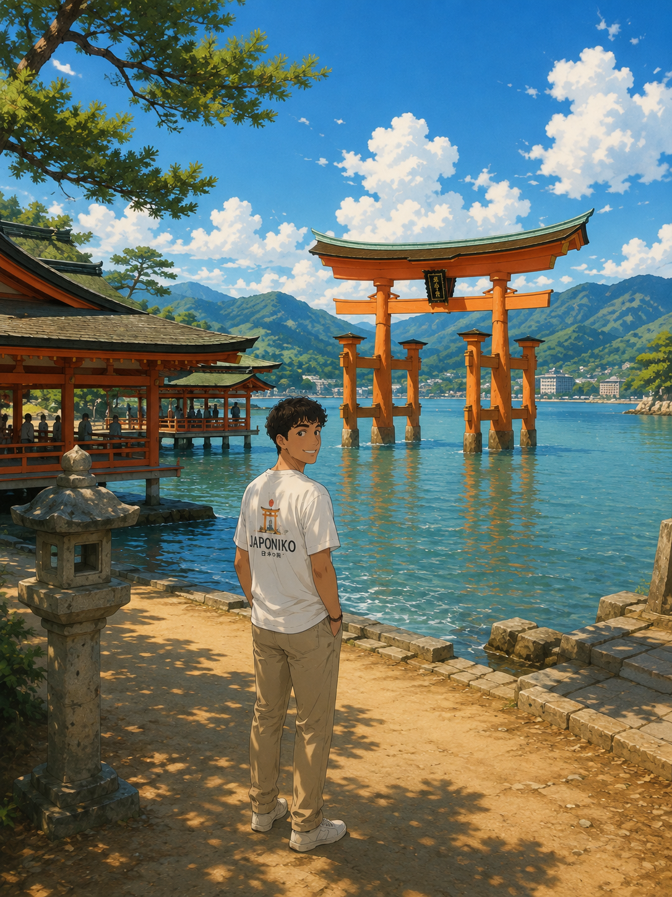
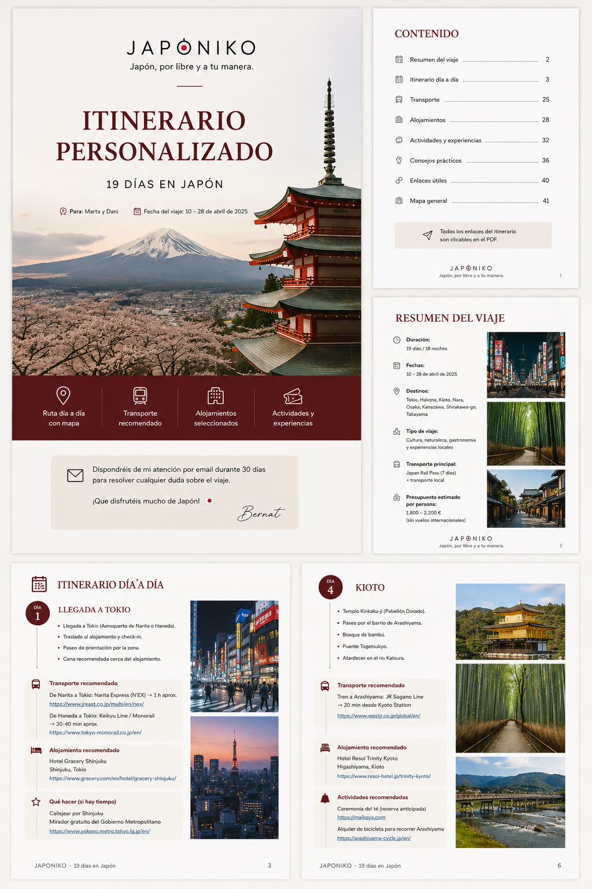
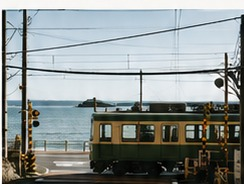
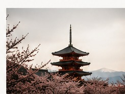
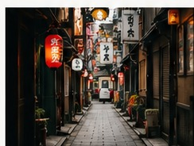
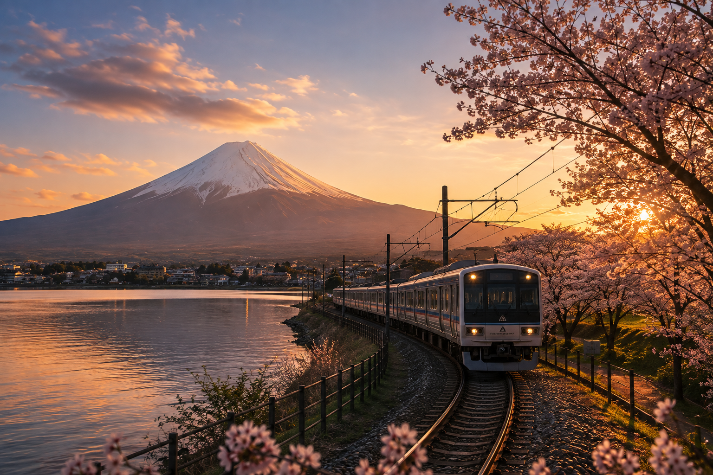

Ruta día a día
Qué ver, cuándo hacerlo y cómo encajar cada jornada sin correr de más.
ASESORÍA PARA VIAJAR A JAPÓN
Diseño una ruta a medida según tus gustos, tu presupuesto y la forma en la que quieres viajar. Me encargo de organizar todo el viaje para que tengas claro dónde ir, dónde dormir, cómo moverte y qué hacer en cada lugar.
79 € / viaje
Ruta personalizada + planificación completa
+ 30 días de acompañamiento

日本¿TIENES JAPÓN EN MENTE?
Déjame tu email y te explico cómo funciona la asesoría.
TU ITINERARIO
Todo pensado para ti, organizado en un solo lugar y listo para disfrutar.
Quiero mi itinerario →
LA ASESORÍA JAPONIKO
Un precio claro para dejar de improvisar y empezar a organizar tu viaje con una ruta que tenga sentido.
Quiero empezar →¿QUÉ RECIBES POR 79 €?
Tú haces las reservas. Nosotros te ayudamos a decidir cuáles encajan mejor en tu viaje.



Demasiadas opciones, demasiada información y poco tiempo para saber qué merece realmente la pena.
No necesitas más información.
Necesitas saber qué hacer con ella.
Analizamos tus fechas, preferencias y presupuesto para diseñar un viaje que encaje contigo. Nada de itinerarios genéricos.
Qué ver, cuándo hacerlo y cómo encajar cada jornada sin correr de más.
Hoteles, transporte, actividades y recomendaciones elegidas para tu viaje.
Opciones claras para consultar y reservar por tu cuenta, sin volver a buscarlo todo.
QUIÉN ESTÁ DETRÁS
Llevo más de 10 años trabajando en el sector turístico. He visto cómo una buena planificación puede transformar por completo la experiencia de un viaje.
Asia siempre ha sido una de mis grandes pasiones, y Japón ocupa un lugar especial: por su cultura, su gastronomía y la forma en que cada viaje puede ser diferente.
Japoniko nace para ayudarte a vivir Japón a tu manera, con criterio y sin complicarte de más.
“Un buen viaje no consiste en verlo todo. Consiste en vivir lo que de verdad encaja contigo.”
Te asesoramos y planificamos contigo; las reservas siempre las haces tú, con toda la información clara delante.
EMPIEZA AQUÍ
Rellena este formulario y te responderé para empezar a pensar tu viaje. No necesitas tenerlo todo decidido.
79 € por viaje
Itinerario personalizado + 30 días de acompañamiento.
No. La asesoría incluye la planificación y las recomendaciones; tú haces las reservas directamente.
Tú decides y reservas. Te ayudamos a valorar las opciones que mejor encajan con tu ruta.
Sí. Recibirás recomendaciones de alojamiento adaptadas a tu viaje y presupuesto.
Sí. Tienes 30 días para hacer consultas y ajustar la propuesta.
Precisamente ese es el objetivo: viajas por libre, con un plan claro y personalizado.
Partimos de lo que ya tienes y organizamos el resto alrededor de ello.
No. Es un precio único de 79 € por viaje.
Te responderemos para conocer tu viaje y explicarte los siguientes pasos antes de empezar.
JAPONIKO
Cuéntanos qué tienes en mente. Te ayudamos a convertirlo en un viaje que tenga sentido.
Quiero planificar mi viaje →